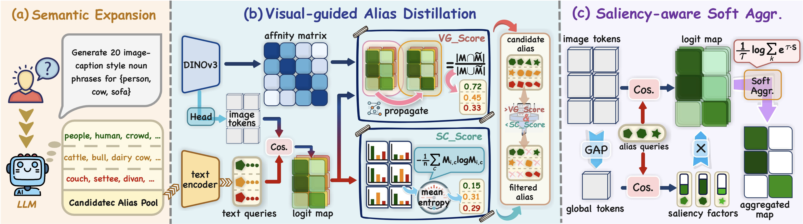
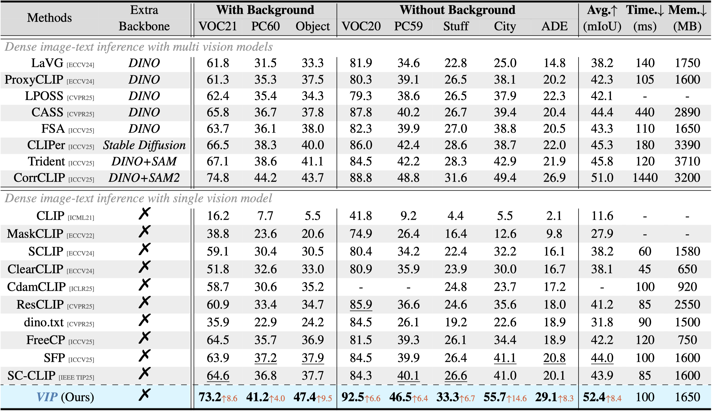
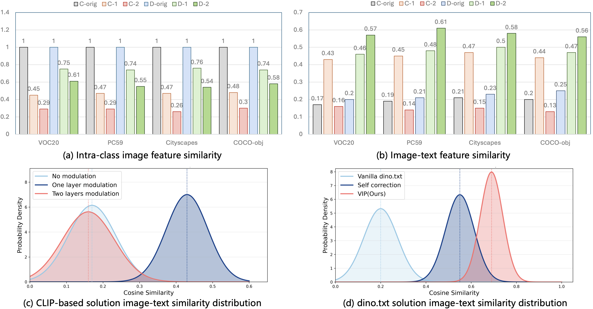

Prompt Evolution for Dense Prediction
VIP targets the semantic mismatch between text queries and dense visual evidence instead of only changing the vision backbone.
ICML 2026 Regular Paper

Figure 1. Overview comparison of ourVIP and CLIP-based pipeline.
Training-free open-vocabulary semantic segmentation still struggles to stay both efficient and generalizable, especially when CLIP-style models introduce strong spatial bias. VIP moves beyond the CLIP-based route and instead builds on the spatially-aware dino.txt framework for dense prediction. The core issue is that ambiguous text queries can still misalign dense cross-modal interactions, so VIP refines text semantics through visual-guided prompt evolution. Concretely, it combines alias expansion, visual-guided distillation, and saliency-aware aggregation to produce higher-fidelity predictions with only marginal inference time and memory overhead.
VIP is designed as an efficient training-free dense vision-language inference pipeline that improves text-query quality before final dense matching. VIP evolves prompts with visual guidance. It expands aliases, distills useful semantic cues from image evidence, and improves query expressiveness before dense cross-modal interaction. Saliency-aware aggregation makes the mined semantic cues more robust, which helps recover fine-grained object perception while keeping inference overhead low.

Figure 2. Framework overview ofVIP . It comprises three key modules: semantic expansion, alias distillation, and activation aggregation, to refine the semantic expressiveness of text queries.
VIP targets the semantic mismatch between text queries and dense visual evidence instead of only changing the vision backbone.
According to comprehensive experiments on different benchmarks, VIP improves average mIoU by 1.4% to 8.4% over top-leading methods.
The reported gains come with only marginal additional inference time and memory overhead, which is important for practical use.

Figure 3. Comparison with the state-of-the-art training-free OVSS methods on natural images and urban scenes. Best results are in bold, and second best are underlined. The inference time and memory footprint of the model are evaluated on the Pascal VOC dataset.

Figure 4. Quantitative similarity analysis between the refined and the original features. ‘C’ and ‘D’ denote the CLIP and dino.txt models, respectively, while the ‘-1’ and ‘-2’ denote the refined layers. ‘-orig’ denotes the original feature. (a) Intra-class image feature similarity, which measures the patch-level similarity between the refined and the original image features. ‘-orig’ means the self-similarity, e.g., = 1. (b) Image-text similarity, which measures the image-text similarity among the refined and the original image features to the same text embeddings. (c) CLIP-based solution image-text similarity distribution. (d) dino.txt solution image-text similarity distribution. Both (c) and (d) represent results evaluated on the Pascal VOC.
We consider two comparative settings for both models: ① modulating the self-attention mechanism exclusively in the final layer of the image encoders, and ② extending the modulation to the penultimate layer to further enhance spatial awareness. It is evident that CLIP’s cross-modal alignment suffers a collapse following extended modulation. This reveals that the spatial bias in CLIP is inextricably entangled with its cross-modal alignment capability. Hence, attempts to address the former often come at the expense of the latter. Conversely, benefiting from the inherent spatial awareness priors of DINOv3, dino.txt fundamentally mitigates this bottleneck.
@article{zhu2026vip,
title = {VIP: Visual-guided Prompt Evolution for Efficient Dense Vision-Language Inference},
author = {Hao Zhu and Shuo Jin and Wenbin Liao and Jiayu Xiao and Yan Zhu and Siyue Yu and Feng Dai},
journal = {arXiv preprint arXiv:2605.12325},
year = {2026}
}